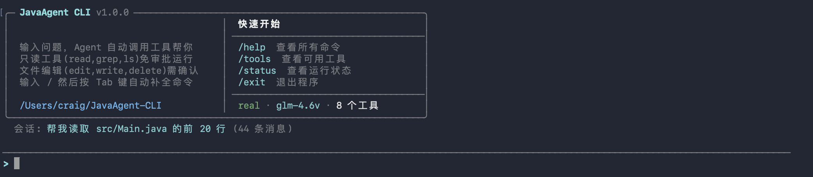

JavaAgent-CLI 是一个用 Java 21 实现的自主编程智能体，类似于 Claude Code 的命令行版本。它采用 ReAct（Reasoning + Acting）架构，让大语言模型通过工具调用与本地开发环境交互，自动完成编程任务。
用户输入自然语言指令后，智能体自主规划、推理、调用工具（文件编辑、搜索、Shell 执行等）来完成任务，整个过程在终端中实时可见。
| 特性 | 说明 |
|---|---|
| ReAct 推理循环 | 观察-推理-行动-反思，每轮最多 12 次迭代 |
| 8 个内置工具 | read_file、write_file、edit、delete_file、grep、list_directory、bash、network |
| SSE 流式输出 | 逐 token 实时显示 AI 回复，支持思维链推理 |
| 人机协作审批 | 只读操作自动批准，写入操作需用户确认 |
| 上下文可视化 | /context 命令展示 token 使用分布 |
| 5 级推理深度 | 从"简短直接"到"极限推理"可调 |
| 安全沙箱 | 工作区隔离、危险命令检测、敏感信息脱敏 |
| 跨平台支持 | macOS / Linux / Windows（PowerShell/cmd） |
| 组件 | 版本 | 用途 |
|---|---|---|
| Java | 21+ | 运行环境 |
| Maven | 3.8+ | 构建工具 |
| Jackson | 2.18.3 | JSON 序列化 |
| JLine 3 | 3.28.0 | 终端交互、行编辑、Tab 补全 |
| jtokkit | 1.1.0 | Token 计数（cl100k_base） |
| JUnit 5 | 5.11.4 | 单元测试与集成测试 |
JavaAgent-CLI 采用分层架构设计，各层职责清晰：
┌─────────────────────────────────────────────┐
│ JavaAgentCLI（入口层） │
│ REPL 循环 · 斜杠命令路由 · ANSI 渲染 │
├─────────────────────────────────────────────┤
│ Agent（核心引擎层） │
│ ReAct 循环 · 系统提示词构建 · 上下文压缩 │
├─────────────────────────────────────────────┤
│ ModelClient │ ToolRegistry │ ApprovalManager│
│ 模型通信 │ 工具注册管理 │ 权限审批策略 │
├─────────────────────────────────────────────┤
│ Tools（工具层） │
│ 8 个内置工具 + SPI 插件扩展 │
└─────────────────────────────────────────────┘每次用户输入后，Agent 执行以下循环：
工具执行前经过审批检查：
工具调用请求
↓
策略检查（bash 是否启用？路径是否越权？是否受保护路径？）
↓ 硬拒绝 → 直接拒绝
↓ 通过
绕过模式？→ 是 → 自动批准
↓ 否
审批缓存命中？→ 是 → 沿用缓存结果
↓ 否
只读工具？→ 是 → 自动批准
↓ 否
请求用户确认 → 缓存结果 → 执行/拒绝| 软件 | 最低版本 | 说明 |
|---|---|---|
| JDK | 21 | 需要支持虚拟线程和模式切换 |
| Maven | 3.8 | 构建工具 |
| 操作系统 | — | macOS、Linux、Windows 均可 |
无需 API Key 和网络，用于开发和演示。使用 --mock 参数启动。
如果你使用小龙虾（Lobster）或 Hermes 等 AI 编程助手，只需发送下面这句话即可自动完成项目下载、构建和部署：
AI 将自动克隆仓库、安装依赖、编译项目并完成运行环境配置。
启动成功后将看到如下界面：

运行时行为通过 config.properties 文件控制。程序会按以下顺序查找配置文件：
~/.javaagent-cli/config.properties/reload 命令热重载，无需重启程序。
启动程序后，在提示符处输入自然语言指令即可：
JavaAgent CLI v1.0.0 | mock-model | effort: high
──────────────────────────────────────────────────
> 帮我读取 README.md 文件
> 在 src/ 目录下搜索所有包含 "TODO" 的行| 命令 | 说明 |
|---|---|
/help | 显示帮助信息 |
/clear | 清除当前对话 |
/context | 查看 token 使用情况 |
/effort [level] | 设置推理深度（low/high/xhigh/max/ultra） |
/mock | 切换到模拟模式 |
/real | 切换到真实模式 |
/model [name] | 查看或切换模型 |
/prompt show|set|reset | 管理系统提示词 |
/sessions | 列出历史会话 |
/reload | 重新加载配置文件 |
/stats | 查看工具调用统计 |
/version | 查看版本信息 |
| 级别 | 特点 | 适用场景 |
|---|---|---|
| low | 简短直接，跳过解释 | 快速问答、简单操作 |
| high | 逐步推理，详细解释 | 日常编程任务（默认） |
| xhigh | 深度分析，多角度探索 | 复杂问题、架构设计 |
| max | 最大深度，考虑所有边界 | 关键代码审查 |
| ultra | 极限推理，穷举一切可能 | 极其复杂的系统设计 |
| 工具名 | 别名 | 功能 | 参数 |
|---|---|---|---|
read_file | cat | 读取文件内容 | path, limit, offset |
write_file | write | 写入文件（支持追加） | path, content, append |
edit | str_replace | 精确字符串替换 | path, old_string, new_string, replace_all |
delete_file | rm | 删除文件 | path |
grep | search, find | 正则搜索文本 | pattern, path, case_sensitive |
list_directory | ls | 列出目录内容 | path, recursive, limit |
bash | shell, exec | 执行 Shell 命令 | command |
network | http | 发送 HTTP 请求 | method, url, body |
在 CLI 提示符处输入 / 可查看所有可用命令并自动补全。
使用 /context 命令查看当前 token 使用情况，包括：
当 token 使用超过阈值（默认 80%）时，系统会自动压缩对话历史。
/sessions — 列出所有历史会话/clear — 开始新会话文件操作默认限制在工作区内。访问工作区外的路径会被拒绝，除非在配置中明确启用 agent.allow_external_paths=true。
BashTool 内置了 20 种危险命令模式检测：
| 类别 | 检测模式 |
|---|---|
| 文件系统破坏 | rm -rf /、rm -rf ~、chmod -R 777 / |
| 磁盘破坏 | mkfs、dd if=...of=/dev/ |
| 系统破坏 | shutdown、:(){ :|:& };: |
| 安全攻击 | 反弹 shell、curl | bash、kill -9 1 |
| 数据泄露 | curl -d @/etc/passwd、shred |
工具执行结果在存储到会话文件前，会自动脱敏以下内容：
同一工具连续失败 3 次后，Agent 自动停止并提示，防止无限循环。
JavaAgent-CLI 支持通过 Java SPI（ServiceLoader）机制扩展新工具：
ToolProvider 接口META-INF/services/com.javagent.tools.ToolProvider 中注册public interface ToolProvider {
/** 返回工具定义列表 */
List<Tool> provideTools();
}JavaAgent-CLI/
├── src/main/java/com/javagent/
│ ├── JavaAgentCLI.java # CLI 入口，REPL 循环
│ ├── BannerPrinter.java # 启动横幅 + 状态栏
│ ├── SlashCommandCompleter.java # 斜杠命令补全
│ ├── core/
│ │ ├── Agent.java # ReAct 循环引擎
│ │ ├── Config.java # 配置管理
│ │ ├── ConversationManager.java # 会话管理
│ │ ├── ApprovalManager.java # 权限审批
│ │ └── ...
│ ├── model/
│ │ ├── ModelClient.java # 模型客户端接口
│ │ ├── OpenAiCompatibleModelClient.java
│ │ ├── MockModelClient.java # 模拟客户端
│ │ └── ...
│ ├── tools/
│ │ ├── Tool.java # 工具接口
│ │ ├── ToolRegistry.java # 工具注册中心
│ │ ├── ReadFileTool.java # 读取文件
│ │ ├── EditTool.java # 精确编辑
│ │ ├── BashTool.java # Shell 执行
│ │ └── ...
│ └── util/
│ ├── Terminal.java # ANSI 终端渲染
│ ├── TokenCounter.java # Token 计数
│ ├── MarkdownRenderer.java # Markdown 渲染
│ └── ...
├── src/test/java/ # 66 个测试用例
├── pom.xml # Maven 配置
├── javaagentcli # macOS/Linux 启动脚本
├── javaagentcli.cmd # Windows 启动脚本
└── config.properties # 配置文件（可选）需要添加 JVM 参数：--enable-native-access=ALL-UNNAMED。使用提供的包装脚本可自动添加此参数。
或使用 /reload 热重载。
输入 /context 命令，会显示彩色的 token 使用分布图。
格式为 JSON。